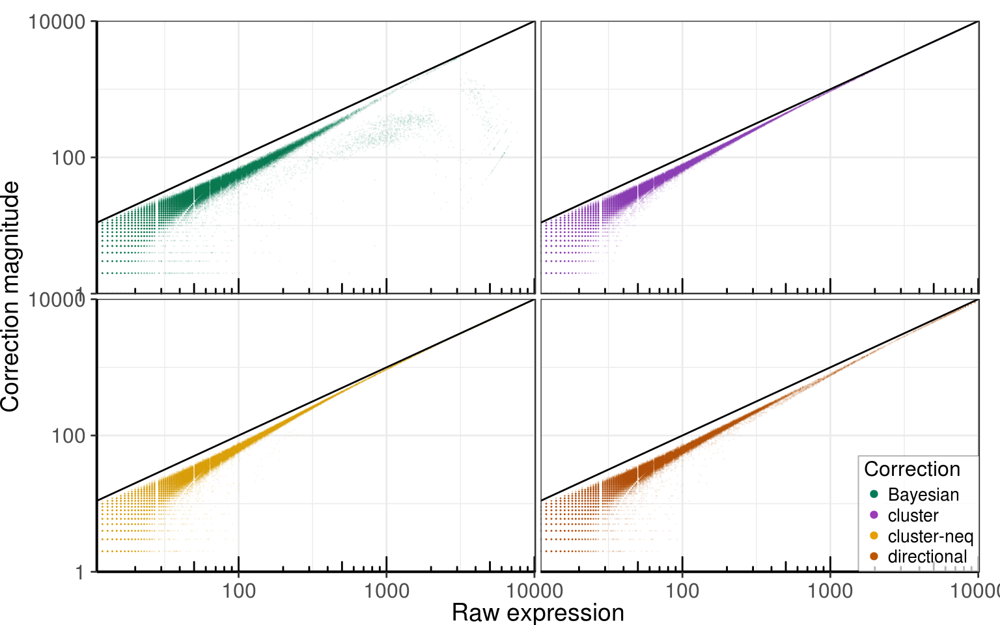
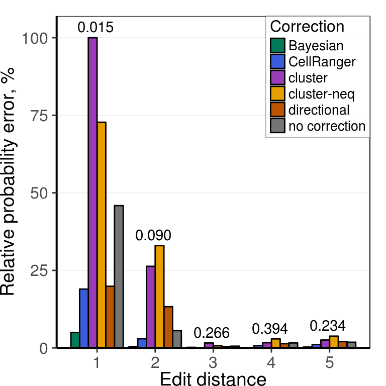
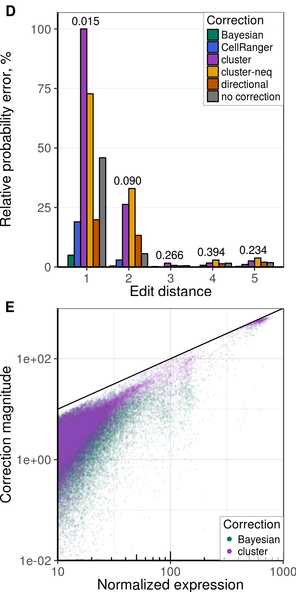

Source file: notebooks/umi_correction/umi_bmmc1.Rmd
Last updated: 2018-02-06
Code version: 58021ae
Load data
Link to the original dataset.
library(ggplot2)
library(ggrastr)
library(ggpubr)
library(dplyr)
library(parallel)
library(reshape2)
library(dropestr)
library(dropEstAnalysis)
library(Matrix)
theme_set(theme_base)
kPlotsDir <- '../../output/figures/'
kDatasetName <- 'frozen_bmmc_healthy_donor1'
kDatasetPath <- '../../data/dropest/10x/frozen_bmmc_healthy_donor1/'
kDataPath <- paste0(kDatasetPath, 'est_01_20_umi_quality/')
kData10xPath <- paste0(kDatasetPath, 'est_11_10_umi_quality/')
holder <- readRDS(paste0(kDataPath, 'bmmc.rds'))
if (length(holder$reads_per_umi_per_cell$reads_per_umi[[1]][[1]]) != 2)
stop("Quality must be provided")
umi_distribution <- GetUmisDistribution(holder$reads_per_umi_per_cell$reads_per_umi)
umi_probs <- umi_distribution / sum(umi_distribution)
collisions_info <- FillCollisionsAdjustmentInfo(umi_probs, max(holder$cm))
UMI correction
# corrected_reads <- list()
# corrected_reads$Bayesian <- holder$reads_per_umi_per_cell %>%
# CorrectUmiSequenceErrors(method='Bayesian', return='reads',
# collisions.info=collisions_info, umi.probabilities=umi_probs,
# verbosity.level=2, mc.cores=30)
#
# corrected_reads$cluster <- holder$reads_per_umi_per_cell %>%
# CorrectUmiSequenceErrors(method='Classic', return='reads',
# collisions.info=collisions_info, umi.probabilities=umi_probs,
# verbosity.level=2, mc.cores=30)
#
# corrected_reads$`cluster-neq` <- holder$reads_per_umi_per_cell %>%
# CorrectUmiSequenceErrors(method='Classic', return='reads', mult=1+1e-4,
# collisions.info=collisions_info, umi.probabilities=umi_probs,
# verbosity.level=2, mc.cores=30)
#
# corrected_reads$directional <- holder$reads_per_umi_per_cell %>%
# CorrectUmiSequenceErrors(method='Classic', return='reads', mult=2,
# collisions.info=collisions_info, umi.probabilities=umi_probs,
# verbosity.level=2, mc.cores=30)
#
# corrected_reads$`no correction` <- holder$reads_per_umi_per_cell$reads_per_umi
# saveRDS(corrected_reads, paste0(kDataPath, 'corrected_rpus.rds'))
corrected_reads <- readRDS(paste0(kDataPath, 'corrected_rpus.rds'))
corrected_cms <- lapply(corrected_reads, BuildCountMatrixFromReads,
reads.per.umi.per.cb.info=holder$reads_per_umi_per_cell,
collisions.info=collisions_info)
corrected_cms <- lapply(corrected_cms, function(cm) cm[grep("^[^;]+$", rownames(cm)), ])
names(corrected_cms) <- c('Bayesian', 'cluster', 'cluster-neq', 'directional',
'no correction')
correction_colors <- c(`CellRanger`="#3b5ddb", Bayesian="#017A5A", cluster="#9B3BB8",
`cluster-neq`="#E69F00", directional="#BD5500",
`no correction`='#757575')
Magnitude of correction
Raw expression
PlotCorrectionSize(corrected_cms, correction_colors) +
labs(x = 'Raw expression', y = 'Correction magnitude')

Normalized expression
norm_cms <- lapply(corrected_cms, function(cm) 1000 * t(t(cm) / Matrix::colSums(cm)))
size_supp_fig <- PlotCorrectionSize(norm_cms, correction_colors,
xlim=c(10, 1010), ylim=c(1e-2, 1000),
dpi=150, width=4, height=2.5) +
labs(x = 'Normalized expression', y = 'Correction magnitude')
ggsave(paste0(kPlotsDir, 'supp_bmmc_correction_size.pdf'), size_supp_fig, width=8, height=5)
size_supp_fig

Subset for main figure
gg_correction_size <- norm_cms[c('Bayesian', 'cluster', 'no correction')] %>%
PlotCorrectionSize(correction_colors, xlim=c(10, 1010), ylim=c(1e-2, 1000),
dpi=150, width=4, height=4, facet=F,
mapping=aes(x=`no correction`, y=`no correction`-value,
color=Correction, alpha=Correction)) +
labs(x = 'Normalized expression', y = 'Correction magnitude') +
scale_alpha_manual(values=c(Bayesian=0.05, cluster=0.02))
gg_correction_size

Edit distances
Comparison of edit distances with the expected distribution, similar to UMI Tools paper.
holder_10x <- readRDS(paste0(kData10xPath, 'bmmc.rds'))
corrected_reads$CellRanger <- holder_10x$reads_per_umi_per_cell$reads_per_umi
Theoretical distribution. Here we use distribution of raw data, but changing it to one of the corrected distributions doesn’t affect the results:
# ed_probs <- sapply(1:500, function(i) SampleNoReps(1000, names(umi_probs), umi_probs) %>%
# PairwiseHamming()) %>% ValueCounts(return_probs=T)
# ed_probs <- ed_probs[paste(1:5)]
ed_probs <- corrected_reads$`no correction` %>% sapply(length) %>%
mclapply(SampleNoReps, names(umi_probs), umi_probs, mc.cores=20) %>%
EditDistanceDistribution(mc.cores=20)
Observed distribution:
umis_per_gene <- mclapply(corrected_reads, lapply, names, mc.cores=6)
obs_ed_probs <- mclapply(umis_per_gene, function(upg)
EditDistanceDistribution(upg, mc.cores=8), mc.cores=6) %>%
as_tibble()
Figure build:
levels_order <- c('Bayesian', 'CellRanger', 'cluster', 'cluster-neq', 'directional',
'no correction')
plot_df <- (abs(obs_ed_probs - ed_probs) / ed_probs) %>% mutate(EditDistance=1:5) %>%
melt(variable.name = 'Correction', value.name = 'Error', id.vars = 'EditDistance')
plot_df$Correction <- factor(as.character(plot_df$Correction), levels=levels_order, ordered=T)
text_df <- data.frame(Prob=ed_probs, EditDistance=1:5, x=1:5 - 0.03) %>%
mutate(y = plot_df %>% group_by(EditDistance) %>% summarise(Error=max(Error)) %>%
.$Error * 100 + 3.5)
breaks <- seq(0, 100, by=25)
gg_eds <- ggplot(plot_df) +
geom_bar(aes(x = EditDistance, y = 100 * Error, fill = Correction), color = 'black',
position = 'dodge', stat = 'identity') +
labs(x = 'Edit distance', y = 'Relative probability error, %') +
geom_text(aes(x=x, y=y, label=format(Prob, digits=2)), text_df) +
scale_y_continuous(expand=c(0.0, 0), limits=c(0, 107), minor_breaks=breaks - 1e-3,
breaks=breaks) +
scale_x_continuous(minor_breaks=NULL) +
scale_fill_manual(values=correction_colors) +
theme_pdf(legend.pos=c(1, 1)) +
theme(panel.grid.major=element_blank())
gg_eds

Main figure, right part
gg_fig <- cowplot::plot_grid(gg_eds, gg_correction_size, nrow=2,
align='v', labels=c('D', 'E'))
saveRDS(list(gg_fig=gg_fig, gg_eds=gg_eds, gg_correction_size=gg_correction_size,
correction_colors=correction_colors, levels_order=levels_order),
'../../data/plot_data/bmmc_umi_fig_part2.rds')
gg_fig

This R Markdown site was created with workflowr